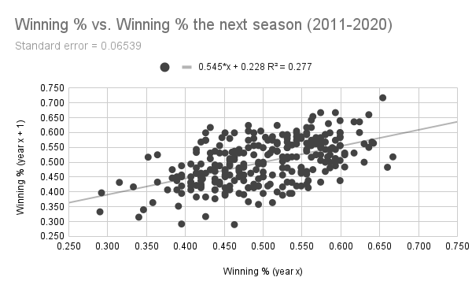
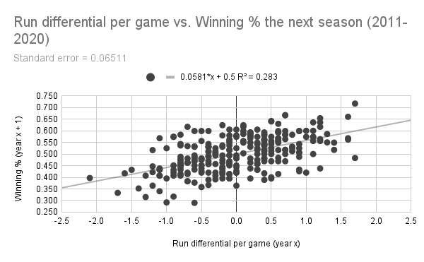
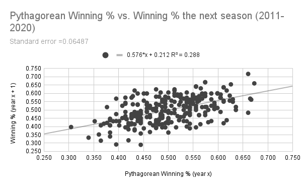
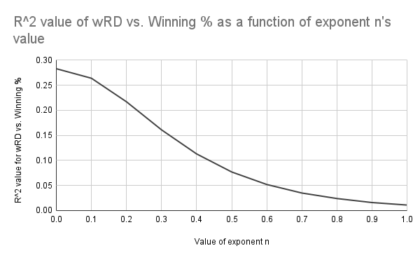
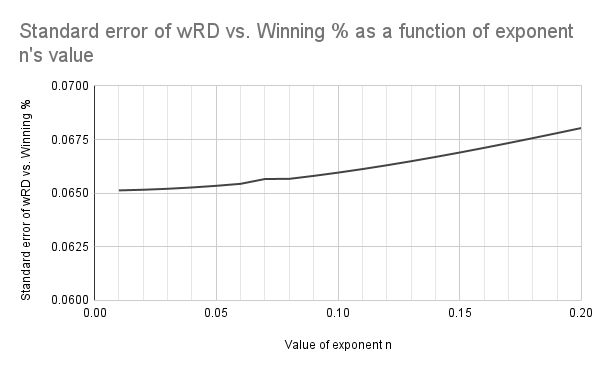

Not All Runs are Created Equal, Part 2
by A. Kline
Posted on 07/30/2021
One of the major appeals of well-known “should have been” metrics for measuring teams, like Pythagorean win-loss record, is that they tend to be better at predicting the number of wins a team will get in the future than—well, the number of wins a team already got. Even the most bare bones of predicted win-loss records, Bill James’s Pythagorean formula, is better correlated with future team performance than a team’s actual record. Clay Davenport, the co-founder of Baseball Prospectus, created a different version of this formula based on the same concept of run differential that correlates even better, which further inspired David Smyth’s Pythagenpat.
But don’t just take it from me, let’s look at the data. I decided to look at a decade’s worth of data (from the 2011 to 2020 seasons, inclusive) for all MLB teams, specifically their winning percentage, run differential, and strength of schedule. From there, we can calculate each season team’s Pythagorean winning percentage and use linear regression to compare it to the team’s performance the next season (meaning a team’s record in 2011 will be a point’s X value while that team’s record in 2012 will be that point’s Y value, and the team’s record in 2012 will be the X value when the Y value is their record in 2013). I apologize if this is not eloquently worded and still confusing, but hopefully you’ll see what I mean in one second.
There exists a weak yet noticeable relationship between a team’s winning percentage one year and their winning percentage the next. (Data: Baseball-Reference.com)
As you might imagine, there is some correlation between how many games a team will win in a given year and how many they will win in the next, but not a very strong one, as indicated by the r-squared value of 0.277. The standard error of around 0.06539 indicates that the average team’s next-year performance will be off from their predicted winning percentage by about 6.54 percentage points. But that’s just winning percentage, which is influenced by all kinds of luck factors. So if run differential is a better measure of team skill than winning percentage, it should have a stronger correlation with future success, right?
The correlation between run differential and winning percentage the next year is indeed stronger, but not by much. (Data: Baseball-Reference.com)
When swapping out winning percentage with run differential per game*, the r-squared value rises to 0.283, while the standard error drops to 6.51 percentage points. Both of these numbers improve further when run differential is swapped out for Pythagorean winning percentage (seen below), which is due to the fact that Pythagorean winning percentage’s formula has an exponent optimized to maximize its correlation with team skill (sound familiar?)
(Data: Baseball-Reference.com)
With all of this in mind, how does weighted run differential correlate with a team’s future success in comparison to these? Well, as I’ve probably beaten into your head at this point since my last post, it depends on what that exponent n is set equal to.
The R^2 value of the relationship between weighted run differential and winning percentage increases as the value of exponent n approaches 0. (Data: Baseball-Reference.com)
As I speculated in my previous post, a lower value for n is better. Even though the correlation maxes out when n is 0, it’s still significant enough when n is less than 0.2. But then again, R^2 isn’t everything—just as important in this case would be the standard error that we discussed earlier. So let’s take a closer look at the range from n = 0 to n = 0.2, but this time we’ll focus on the standard error instead.
The standard error of the relationship between weighted run differential and winning percentage decreases as the value of exponent n approaches 0. (Data: Baseball-Reference.com)
I will admit this result is not what I expected. The fact that the formula for weighted run differential is the most accurate (as measured by the standard error being the lowest) when n = 0 indicates that the formula is actually no better than raw run differential. But how?
Well, this could be due to a variety of reasons, or more likely a concoction of all of them to varying degrees. For one (and I’ll admit I don’t have any hard data in front of me to back this up), but MLB schedules for a given team are usually pretty consistent over two consecutive seasons. Aside from the interleague division matchup alternating each season, the opponents of a given team will be the same year after year, and will probably play about the same as the previous year barring any major collapses or surges of certain teams. If this is the case, then a team’s strength of schedule probably will not change in the span of one year, and as such, it does not make sense to use a weighted formula for a season while always assuming the next season will be average. It makes sense for MLB schedules to be somewhat consistent from year to year—but then again, I don’t have any data in front of me to prove that. At least not yet.
But the more pressing culprit might be the formula itself. As useful as strength of schedule is, there is not much nuance to it—for example, did a team have an easier schedule because they benefited disproportionately from 1) weak opposing pitchers their batters could wallop, or 2) weak opposing hitters that made their pitchers’ jobs easy? No way to tell with SOS. The solution would be to weight runs scored based on how skilled the opponents’ pitching is and weight runs allowed based on how skilled the opponent’s hitting is. But then again, this is something to address at a later date.
If there’s one thing that I found really interesting about these data, however, it’s that winning percentage and run differential (weighted as well as unweighted) are really not that different. Sure, the correlation and standard error are both better in the case of run differential, but only by a small margin—arguably one too small to even be considered significant. Like many things quantified in baseball, our ability to evaluate team skill may be asymptotic—we can get closer and closer, but can never quite create a 100% accurate metric. I hate to say this, but the metrics we have now are only good for ballpark estimates at a team’s skill. Personally, I don’t believe that we will ever be able to measure a team’s skill with perfect accuracy, but I do think putting their scoring into context will get us just that much closer.
*This is where I will admit to a potential source of error in my calculations. For some reason, Baseball Reference doesn’t like listing the specific number of runs each team scores and allows in their expanded season standings—only the number of runs scored and allowed per game to one decimal point. As a result, I had to recalculate each team’s expected run differential by multiplying these values by the number of games they played, meaning a team’s recalculated run differential may be off from their actual one by as many as 15 or so runs. The good news, though, is that this affects unweighted and weighted run differential in the exact same way, meaning it does not introduce bias when comparing those two.